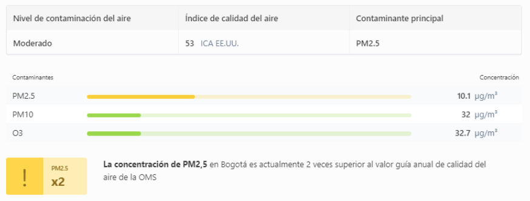
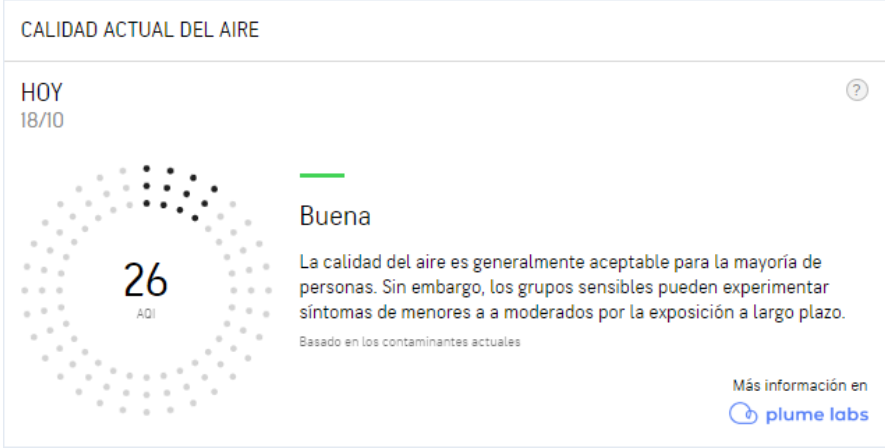
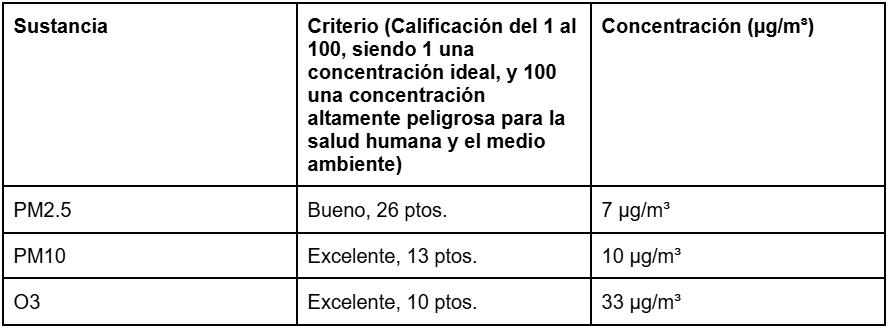
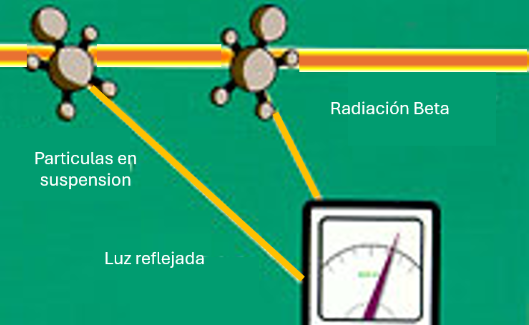
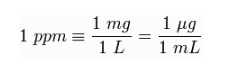

Introduccion
Para comprender mejor la materia a estudiar, es necesario conocer algunos conceptos que representan la base de la investigación a realizar. Los conceptos mencionados son establecidos en apartados donde se ampliarán las bases del presente trabajo. Inicialmente, para comprender mejor el asunto, se explicará el aire mismo en esencia, junto con su composición, puesto que este concepto es crucial para el desarrollo consiguiente. En segundo lugar, se desarrollará la materia principal que justifica la investigación: La contaminación del aire, y por consiguiente, sus efectos en la salud cardiorrespiratoria, junto con el funcionamiento anatómico de los sistemas los cuales ejecutan la respiración, y por ende, la vida. Como tercer punto de este marco teórico, se hará un breve barrido sobre la materia ambiental en la ciudad de Bogotá, esto con el fin de acercar la problemática global a nuestro contexto nacional y regional. Por otra parte, se extenderá en el tema de los sistemas de medición de la calidad del aire, incluyendo métodos caseros, de bajo costo, y los sistemas más sofisticados usados por organismos oficiales para llevar registro de esta misma, para contextualizar la situación actual en términos de material particulado y contaminantes aéreos pesado.Finalmente, se ahondará en la percepción y conocimiento social del tema mencionado, pues es de vital importancia tener esta punto de vista para conocer como, en el cotidiano, se lidia y comprende la calidad del aire y su impacto, tanto en lo individual, como en lo comunitario.
1) El aire, sus componentes y contaminantes
En este apartado se va a abordar el tema de “El aire, sus componentes y contaminantes” este es esencial pues el aire es fundamental para la vida en la tierra.
Es fundamental entender “Que es el aire” por tanto aquí se dará una pequeña definición de este.
“El aire es una mezcla de gases que forman la atmósfera, es por ello que se encuentran en todas partes”
Una vez ya conocida la definición de aire, es importante mencionar como es el aire en las ciudades para esto, se utilizara el siguiente fragmento:
i) “Según la Organización Mundial de la Salud OMS, la contaminación del aire representa un importante riesgo medioambiental para la salud. Son constantes sus mensajes e informes alertando del incumplimiento de los valores límite de protección a la salud de contaminantes atmosféricos en el aire que respiramos. Dos informes de la OMS de 2014, ratificados en 2016, exponían que el 92% de la población mundial vive en lugares donde no se respetan los valores guía de calidad del aire y estimaban que la contaminación atmosférica local a nivel troposférico, tanto en las ciudades como en las zonas rurales de todo el mundo, provoca cada año tres millones de defunciones prematuras.”
Y ahora se abordará “qué son las corrientes del aire” mencionar esto es importante ya que estas desempeñan un papel clave en la regulación del clima y la distribución de humedad y calor en la atmósfera.
ii) “El viento es solamente aire en movimiento. No puedes verlo realmente. Ya sea una brisa suave o un viento fuerte, eres más consciente del aire cuando se mueve. Puedes sentir sus moléculas presionando contra ti. Además puedes ver cosas como el polvo y las hojas, así como también objetos moviéndose, como banderas y árboles, por causa del viento.”
“El movimiento del aire ocurre en la troposfera. Ésta es la capa más baja de la atmósfera. El aire se mueve debido a las diferencias de calor. Estas diferencias crean corrientes de convección y vientos.
El aire en la troposfera es más cálido cerca de la tierra. El aire caliente sube porque es ligero. El aire ascendente y ligero crea un área de baja presión de aire en la superficie.
El aire ascendente se enfría a medida que se acerca al límite superior de la troposfera. El aire frío se vuelve denso, por lo que baja a la superficie. El aire descendente y pesado crea un área de alta presión de aire cerca del suelo.
El aire siempre fluye desde un área con mayor presión hacia una con menor presión. El aire que fluye sobre la superficie de la Tierra se llama viento . Entre mayor es la diferencia de presión, más fuerte sopla el viento.
En cuarto lugar se debe de mencionar y comprender y clarificar las composiciones naturales y los elementos químicos que lo componen, lo cual permitirá diferenciar las partículas y los porcentajes que alertan si estos son anormales o presentan alteraciones en la calidad del aire ideal.
b) Sus componentes principales son el nitrógeno, oxígeno, dióxido de carbono, neón, helio, entre otros. Todos ellos de gran importancia y necesarios para que los seres vivos realizan funciones vitales, como las siguientes:
Gracias al oxígeno en la atmósfera, podemos respirar.
El dióxido de carbono es la base para la fotosíntesis.
El aire permite la existencia del fuego, el sonido, el viento, las nubes, las lluvias, etc.
Seguido a esto se mencionará acerca de los contaminantes del aire, ya que estas son sustancias perjudiciales encontradas en la atmósfera que perjudican la salud humana.
c) Los efectos combinados de la contaminación atmosférica y la contaminación del aire en los hogares ocasionan cada año unos siete millones de defunciones prematuras.
Las fuentes de contaminación del aire son múltiples y específicas de cada contexto. Las principales fuentes de contaminación del aire exterior son el consumo doméstico de energía para cocinar y calentar, los vehículos de combustión, la generación de energía, la incineración de residuos y desechos agrícolas, y la industria.
En sexto lugar es de suma importancia mencionar acerca de “cómo se calculan los contaminantes” ya que permite medir y comprender el impacto de la contaminación en la salud pública, el medio ambiente y el clima.
d) Partes por millón (ppm) es la unidad usada frecuentemente para medir el volumen que ocupan pequeñas cantidades de elementos (también denominados traza), dentro de una mezcla. Generalmente se refieren a porcentajes en peso en el caso de los sólidos, y en volúmenes en el caso de gases. Una ppm se utiliza para medir la calidad del aire. De esta forma, 5 ppm de CO equivalen a 5 unidades de volumen de CO por cada millón de unidades de volumen de aire, es decir 5 litros de CO en un millón de litros de aire.
2) Contaminación del aire y sus efectos en la salud cardiorrespiratoria
En este siguiente apartado se hablará de la “Contaminación del aire y sus efectos en la salud” este es de suma relevancia ya que este afecta directamente la calidad de vida de las personas y su salud y bienestar. Comenzando por analizar la procedencia de los contaminantes, en la siguiente lista se nombraran 6 causantes de la contaminación presentes en el aire: a) La contaminación del aire puede producirse localmente, pero viaja a largas distancias, a veces de un continente a otro a través de los fenómenos climáticos. La contaminación atmosférica proviene principalmente de cinco actividades humanas que arrojan una gama de sustancias, tales como monóxido de carbono, dióxido de carbono, dióxido de nitrógeno, óxido de nitrógeno, ozono a nivel del suelo, material particulado, dióxido de azufre, hidrocarburos y plomo, todas perjudiciales para la salud humana. Hogar: quema de madera y combustibles fósiles o basados en biomasa para cocinar, calentar o iluminar. Industria: En muchos países, la generación de energía es una fuente principal de contaminación del aire. Las centrales eléctricas que queman carbón son un emisor importante, y las plantas con base en diésel son una preocupación creciente en las áreas desconectadas de la red. Los procesos industriales y el uso de solventes en las industrias químicas y mineras también contaminan el aire. Transporte: El creciente sector del transporte es responsable de casi una cuarta parte de todas las emisiones de dióxido de carbono relacionadas con la energía, a las cuales se atribuyen casi 400.000 muertes prematuras. Alrededor de la mitad de todas las muertes por contaminación del aire causadas por el transporte se deben a las emisiones de diésel. Por otro lado, las personas que viven más cerca de las principales arterias de tránsito tienen hasta 12% más de probabilidades de ser diagnosticadas con demencia. Ganado: Las fuentes principales de contaminación del aire provenientes de la agricultura incluyen el ganado, que produce metano y amoníaco, y la quema de residuos agrícolas. Las emisiones de metano contribuyen a la formación de ozono a nivel del suelo, que causa el asma y otras enfermedades respiratorias. Residuos: La quema de residuos a cielo abierto y los desechos orgánicos en los vertederos liberan a la atmósfera dioxinas nocivas, furanos, metano y material particulado como el carbono negro. Otros: No toda la contaminación del aire proviene de la actividad humana. Las erupciones volcánicas, las tormentas de polvo y otros procesos naturales también inciden en la calidad del aire. La contaminación del aire no solo impacta el medio ambiente, sino también tiene consecuencias graves para la salud humana. b) Desde el smog suspendido sobre las ciudades hasta el humo en los hogares, la contaminación atmosférica es una grave amenaza para la salud y el clima. La contaminación del aire ambiente (exterior) en las ciudades y las zonas rurales crea partículas finas que causan accidentes cerebrovasculares, cardiopatías, cáncer de pulmón y enfermedades respiratorias agudas y crónicas. Además, unos 2600 millones de personas están expuestas a niveles peligrosos de contaminación del aire en interiores como consecuencia del uso de combustibles para hacer fuego y alimentar cocinas en que se utilizan parafina, biomasa (madera, estiércol animal y desechos agrícolas) o carbón. Los efectos combinados de la contaminación atmosférica y la contaminación del aire en los hogares ocasionan cada año unos siete millones de defunciones prematuras. Estas enfemedades surgen cuando el cuerpo humano absorbe los contaminantes presentes de diversas maneras, a continuación, “ cómo absorbe el cuerpo humano estos materiales”. c)Las partículas PM10 pueden penetrar y alojarse en el interior de los pulmones, causando irritación e inflamación y dañando las paredes de las vías respiratorias. Por lo que respecta a las partículas PM2,5, que son más pequeñas y perjudiciales, pueden atravesar la barrera pulmonar, entrar en el torrente circulatorio y afectar a los principales órganos del cuerpo. Estos contaminantes aumentan el riesgo de sufrir enfermedades cardíacas y respiratorias, así como cáncer de pulmón y accidentes cerebrovasculares. Además de los efectos directos en la salud, y la absorción de contaminantes este también tiene otros aspectos importantes de la vida, y como último tema presente en este apartado “efectos en otros aspectos”. d) El ozono es uno de los principales causantes de la aparición y el agravamiento del asma, mientras que el dióxido de nitrógeno y el dióxido de azufre también pueden provocar asma, síntomas bronquiales, inflamación pulmonar y reducción de la función pulmonar.
3) Contaminación del aire en Bogotá
Debido a la relevancia actual que representa la contaminación aérea, y teniendo en cuenta la región y/o ciudad a evaluar, hacer un barrido de los datos y estadísticas actuales de la situación ambiental de Bogotá es relevante para el avance y comprensión de todos los datos a estudiar y comparar en el futuro; por lo cual se hará una revisión actual de los datos disponibles y de relevancia para el estudio. El notable deterioro de la calidad del aire en Bogotá (y su directa relación con problemas de salud respiratoria y cardiaca) ha generado una creciente preocupación por parte de autoridades ambientales y de salud pública de la ciudad. A pesar de los esfuerzos realizados en años recientes, el problema de contaminación atmosférica es cada vez más severo. La calidad del aire en la ciudad, a día de hoy, se encuentra en un nivel aceptable para la sensibilidad natural de la respiración; así lo indica el índice ICA de IQAir Colombia:

Figura 1 tomada de: https://www.iqair.com/es/colombia/bogota-dc/bogota?srsltid=AfmBOop8HWaaEG-StFcG3ZUSNYtzo7f7-C9Yfu9AHe1ATbKLnY2i54W6
En Puente Aranda, donde se centrará la investigación, los índices de contaminación se describen de la siguiente manera según AccuWeather en su reporte de la calidad del aire mensual:

Figura 2, tomada de: https://www.accuweather.com/es/co/puente-aranda/1357706/air-quality-index/1357706
Teniendo en cuenta las concentraciones de PM2.5, PM10 y O3 de la localidad, representadas en la tabla 1, se puede notar una diferencia notable en la calidad del aire general de la ciudad, y la calidad específica de la localidad. Este fenómeno se puede asociar con la zonalización general de esta, a pesar de ser industrial, no representa concentraciones tan pesadas como las que se pueden encontrar en localidades con gran volumen en materia de automovilista, con grandes avenidas y alta densidad poblacional, mientras que Puente Aranda solo presenta 13.000 habitantes por kilómetro cuadrado (13.000 habitantes/km2).

Tabla 1, Concentración de agentes contaminantes en la localidad de Puente Aranda Datos registrados al 18 de octubre del 2024. Tomado y adaptado de: https://www.accuweather.com/es/co/puente-aranda/1357706/air-quality-index/1357706
Finalmente, los datos de enfermedades cardiorrespiratorias en la ciudad crean un panorama de las consecuencias presentadas por los mismos habitantes de la zona y la región a evaluar.
Los datos generales de las enfermedades cardiorrespiratorias se pueden encontrar en dos partes separadas:
Enfermedades cardiovasculares: Las enfermedades cardiovasculares (ECV) junto con el cáncer, la diabetes y las enfermedades pulmonares crónicas, se identifican en su conjunto como enfermedades no transmisibles (ENT), las cuales han mostrado un rápido aumento, y son la principal causa de muerte en el mundo. Para 2008, las ENT causan el 63% de las muertes y se estima un incremento del 15% (44 millones) entre 2010 y 2020, alcanzando el 73% de la mortalidad y el 60% de la carga de la morbilidad.
Dentro de las ENT, las ECV representan la principal causa de muerte. Para 2008, 17 millones de personas murieron por ECV, lo que es equivalente al 48% de las muertes por ENT y el 30% de todas las muertes registradas en el mundo, 7,3 millones de esas muertes se debieron a cardiopatías coronarias y 6,2 millones a accidente cerebrovascular. En todo el mundo, el 42% de las defunciones por enfermedades cardiovasculares están relacionadas con la cardiopatía isquémica, 34% con enfermedades cerebrovasculares, 7% con enfermedad hipertensiva y 2% con cardiopatía reumática.
Enfermedades respiratorias: Mientras que el año anterior, entre enero y agosto, se produjeron 48 muertes, este año la cifra es de 25. De estos casos, 19 (76%) corresponden a menores afiliados al régimen contributivo en EPS privadas. Solo tres casos se presentaron entre los usuarios de la red pública distrital. Los tres restantes pertenecían al régimen subsidiado a través de Compensar y de la EPS Indígena Mallamas. Hasta septiembre, entre las 20 millones de consultas médicas atendidas en las diferentes Unidades de Servicios de Salud de la ciudad, 1 '415.607 personas acudieron por casos de Infección Respiratoria Aguda (IRA). El 95% obedeció a diferentes cuadros virales y solo 5% requirió hospitalización por complicaciones de neumonía, bronquitis o bronquiolitis. Entre las consultas por IRA, 32% (437.294 casos) corresponde a menores de cinco años; 24% (342.099) son personas entre 20 y 39 años; 18% (260.280) entre 5 y 19 años; 15% (213.372) entre 40 y 59 años, y 11% (162.562) mayores de 60 años. De los menores de cinco años 9% (39.449 casos) han tenido que acudir a las salas IRA del Distrito.
Teniendo en cuenta los anteriores datos, se puede tener una comprensión más acercada a la situación actual en el contexto de la ciudad de Bogotá y la localidad de Puente Aranda.
4) Métodos de medición de la calidad del aire.
Para poder llevar a cabo la experimentación y toma de muestras para conducir el estudio a realizar, es necesario comprender el funcionamiento de estos sensores o métodos de medición a realizar, con el fin de saber analizar y entender los procesos tanto visibles como invisibles que toman lugar durante esta investigación.
Medición con sensores
Inicialmente, se puede decir que los sensores de calidad de aire suelen utilizar mecanismos de detección electroquímica y de dispersión láser para monitorear la calidad del aire; métodos utilizados por la mayoría de sensores de interiores apuntados a medir el material particulado y el nivel de CO2 (Dióxido de Carbono) junto con el O3 (Ozono) en el aire. Estos equipos cuentan las partículas de polvo suspendidas en el aire. Existen variedad de ellos y detectan partículas según lo requiera el uso que se le de. En ellos es común la tecnología de contadores ópticos en los que pasa el aire por una celda de medición con un láser y un fotodetector. El detector mide cuando las partículas dispersan el láser. Este mecanismo no suele funcionar comúnmente para obtener mediciones directas del Ozono, a pesar de que los pueden contabilizar. Para el caso de este, se suele usar el método de detección electroquímica; este sensor usa una Sonda Lambda que mide la concentración de materiales a la salida de escape de vehículos. Su función es identificar que existe una combustión completa. Esta sonda funciona mediante la utilización de un convertidor catalítico que mide la cantidad de oxígeno (ya sea diatómico (O2) o triatómico (O3)) que está saliendo sin ser absorbido o procesado en la reacción interna del motor, tras la interacción o no con este mismo y con las reacciones con cualquier otro compuesto gaseoso. Esta Sonda se suele usar en el campo de la automoción para contabilizar los gases emitidos por el exhosto de un motor y así inyectar electrónicamente las cantidades exactas de combustible para una combustión óptima, pero para el caso del medidor de interiores, esta sonda está modificada para reconocer únicamente la presencia de oxígeno suelto, dejando de contabilizar aquellos presentes en las moléculas las cuales ya han pasado por la reacción química en la combustión. En el caso del funcionamiento por láser, se puede ver evidenciado en un sensor Temtop M2000C, el cual también reporta datos concernientes a la temperatura y humedad relativa del ambiente con una periodicidad del orden de segundos. El sensor mide dos distribuciones de tamaño aerodinámicos: menores a 2.5 micrómetros (PM 2.5) y menores a 10 micrómetros (PM10) empleando métodos ópticos, el funcionamiento se basa en el uso de un láser ultravioleta para la detección de las partículas, las cuales impiden el paso de la luz. El material particulado pasa por un contador óptico de partículas ubicado en el haz de luz y posteriormente al pasar por este lugar, la luz se dispersa, y se refleja a un espejo el cual está enfocado en un detector que convierte las variaciones de la intensidad de luz en una señal eléctrica. Finalmente, la concentración volumétrica de partículas se determina considerando la cantidad del flujo, la presión y temperatura.

FIgura 3, tomada de: https://rama.edomex.gob.mx/tecnicas_medicion
Cabe resaltar que el sensor Temptop M2000C es un sensor de bajo costo con un funcionamiento similar al descrito por los sensores especializados de la RMCAB, por lo tanto, este, mide y registra las partículas haciendo uso del mismo sistema de dispersión y atenuación previamente descrito.
Ahora pues, teniendo en cuenta lo definido en los párrafos anteriores, es importante abarcar la definición de Material Particulado o PM por sus siglas en inglés, ya que son el principal indicador a registrar en el estudio.
La Agencia de protección ambiental Estadounidense, (USEPA), lo describe de la siguiente manera en su página oficial:
“PM significa material particulado (también llamado contaminación por partículas): el término para una mezcla de partículas sólidas y gotas líquidas que se encuentran en el aire. Algunas partículas, como el polvo, la suciedad, el hollín, o el humo, son lo suficientemente grandes y oscuras como para verlas a simple vista. Otras son tan pequeñas que solo pueden detectarse mediante el uso de un microscopio electrónico.”
Us Epa, O. A. (2018). Conceptos básicos sobre el material particulado (PM, por sus siglas en inglés).
Esta concentración de material particulado se estudia mediante el uso de la unidad de medida de Partes por millón, esta se refiere a la cantidad de unidades de la sustancia (agente, etc) que hay por cada millón de unidades del conjunto. Por ejemplo en un millón de granos de arroz, si se pintara uno de negro, este grano representaría una (1) parte por millón. Se abrevia como "ppm".
CARACTERÍSTICAS
Es un concepto análogo al de porcentaje, sólo que en este caso no es partes por ciento sino por millón. De hecho, se podría tomar la siguiente equivalencia:
10.000 ppm = 1 %
Es decir que 10.000 ppm equivalen al uno por ciento. De lo anterior, se puede deducir que esta unidad es usada de manera análoga al porcentaje pero para concentraciones o valores mucho más bajos. Por ejemplo cuando se habla de concentraciones de contaminantes en agua o en aire, disoluciones con muy bajas concentraciones o cantidad de partículas de polvo en un ambiente, entre otros. Un ejemplo podría ser las mediciones de concentración de un contaminante en el aire cuyo valor máximo permisible sea 500 ppm. Tratar de escribir eso en porcentaje sería poco práctico pues sería mucho menor a 1 %. En el caso de disoluciones acuosas, una parte por millón (1 ppm) equivale a un miligramo de soluto por litro de disolución. O lo que es lo mismo, un microgramo de soluto por mililitro:

Cabe aclarar que la diferencia principal entre la PM2.5 y la PM10 se basa en que a las de diámetro aerodinámico igual o inferior a los 10 µm o 10 micrómetros (1 µm corresponde a la milésima parte de un milímetro) se las denomina PM10 y a la fracción respirable más pequeña, PM2,5. Estas últimas están constituidas por aquellas partículas de diámetro aerodinámico inferior o igual a los 2,5 micrómetros, es decir, son 100 veces más delgadas que un cabello humano.
¿Por qué se estudia el Ozono?
Se debe tener en cuenta que este se mide mediante el patrón nacional de Ozono de cada país. Un ejemplo presente, y uno de los más utilizados, es el de España. El patrón nacional de ozono consiste en un fotómetro de referencia que, mediante fotometría ultravioleta (UV), mide concentraciones de ozono generadas dinámicamente. Este patrón nacional es conservado, mantenido y custodiado, bajo la supervisión y coordinación del CEM, por el ACA del CNSA del ISCIII. El método de fotometría UV es un procedimiento primario de referencia para la medida de ozono debido a su exactitud y especificidad. Se basa en el principio de absorción de la radiación UV por las moléculas de ozono a una longitud de onda de 253,7 nm, tal y como se describe en la Ley de Beer-Lambert.
Métodos caseros
Los métodos caseros para realizarlo no son muy abundantes, pero el más común consiste en el del uso de una cinta y vaselina. En este experimento se trata de recoger esas partículas que quedan adheridas a la vaselina para poder hacer un conteo que pueda indicar qué zona de las estudiadas es la que tiene más contaminación y, por tanto, más riesgo para nuestra salud. También puedes probar a repetirlo en diferentes estaciones del año para ver la variación que se produce en cada una de ellas y cómo las condiciones atmosféricas influyen en la calidad del aire. Cabe resaltar que, a medida que la experimentación avance, se tiene previsto poder utilizar otras pruebas relacionadas con la absorción de partículas en el agua, vaselina u otras sustancias, para mantenerse en un contenedor, como lo puede ser la fibra de algodón o algún tipo de textil o plástico altamente absorbente o retentivo que permita la distinción de las partículas o su peso en relación al contenedor y la sustancia a utilizar. Estos métodos a intentar, se pueden denominar como variaciones del descrito en el párrafo anterior, con el fin de encontrar uno adecuado para realizar el análisis propuesto.
5) Conocimiento civil sobre la calidad del aire.
Debido a que la presente materia también requiere de la involucración de la comunidad en general, es importante tener registro de la opinión presentada en general, no solo por la comunidad en Bogotá, sino también la de comunidades en general las cuales se puedan enfrentar al mismo problema con la calidad del aire.
Para esto, se tendrá como referencia un estudio y/o encuesta realizada en la ciudad de Cucúta, Colombia, en el departamento de Norte de Santander, donde un grupo de encuestadores, tomó registro de cómo los ciudadanos perciben la contaminación en general, y sus repercusiones sobre la salud, tomando también los datos de el consumo se tabaco, uso de automóviles y/o transporte pesado y el consumo en general de los hogares que atendieron la encuesta. Las conclusiones de dicho estudio se presentan en el siguiente fragmento:
“El estudio de la relación entre la calidad del aire y la incidencia de enfermedades respiratorias en el municipio de Cúcuta, a apartir de información de percepción ciudadana y de fuentes oficiales de información para estas variables, permitió establecer que la incidencia de enfermedades respiratorias en los habitantes del municipio si tiene una relación dependiente con la calidad del aire. Así mismo, se determinó que la percepción de incidencia de enfermedades respiratorias es significativamente mayor en personas que perciben la presencia de alguna fuente o molestia por contaminación atmosférica cerca de su lugar de vivienda. Siendo los mayores causantes de molestias las fuentes móviles por transporte automotor pesado, polvo, ceniza, quema de basura y material particulado de vías y canchas sin pavimentar.Finalmente, se encontró que las zonas en donde hubo un mayor número reportes de enfermedades respiratorias en los habitantes coinciden con los barrios en los cuales las condiciones meteorológicas promueven una mayor concentración de PM10(rosa y dirección de vientos), con lo cual se reafirma que la incidencia de enfermedades respiratorias tiene una relación dependiente con la calidad del aire”
Así pues, se puede interpretar, que la población en general conoce la situación a la que están expuestos y conocen tanto sus riesgos como consecuencias que se pueden llegar a presentar, reafirmando, también, que la contaminación ambiental y urbana si tiene repercusiones en la salud. A pesar de esto, desafortunadamente, en el estudio se logró notar que los encuestados, a pesar de conocer los riesgos que tiene la polución a gran y pequeña escala, mantiene ciertos hábitos que no contribuyen a la solución del problema, a pesar de conocer todo lo que pasa a su alrededor en cuanto a este tema respecta
Teniendo en cuenta lo anterior, es bueno conocer las iniciativas y proyectos llevados a cabo en el mundo para enfrentar la situación, los cuales, asimismo, son cumplidas y respetadas pro los ciudadanos. Un ejemplo de estos casos es:
El Día Internacional del Aire Limpio por un cielo azul, que se celebra cada año el 7 de septiembre, está dirigido a sensibilizar y movilizar la acción mundial para hacer frente a la contaminación del aire, una problemática que el Secretario General de las Naciones Unidas, António Guterres, calificó recientemente de "emergencia mundial".
En el cuarto Día del Aire Limpio, el Programa de las Naciones Unidas para el Medio Ambiente (PNUMA) se reunió con Martina Otto, directora de la secretaría de la Coalición Clima y Aire Limpio, convocada por el PNUMA, a fin de averiguar cómo el mundo entero puede contrarrestar las consecuencias de la contaminación atmosférica.
El Día del Aire Limpio sensibiliza sobre los graves efectos de la contaminación atmosférica y reúne a investigadores, empresas, gobiernos y particulares para abordar estos problemas.
Finalmente, una iniciativa similar y muy relevante en el espectro de la ciudad de Bogotá es el del día Sin carro y sin moto, el cual se lleva realizando desde hace algunos años, tanto por iniciativas internacionales como nacionales:
“En Bogotá Región, como una de las actividades que engrana con La semana de la Bici, el día jueves 22 de septiembre se reactiva en la capital del país la jornada del Día sin Carro y sin Moto de 5 a.m. a 9 p.m. tras dos años de suspensión por la pandemia por la COVID-19, con la novedad de que se unen los municipios cundinamarqueses de Mosquera y Chía (6 a.m. – 8 p.m.); se prevé que en la capital del país, más de 1’800.000 vehículos particulares y 469.000 motos dejarán de circular, reduciendo la huella de carbono que producen los combustibles fósiles.”
Fragmento del 2022 sobre la iniciativa anual.
Para cerrar esta sección del estudio, a manera de conclusión, se puede decir, actualmente, existe una gran variedad de recursos para llevar a cabo estudios del indole de el presente, los cuales no solo permiten la evaluación de grandes masas urbanas, si no de comunidades mas pequeñas e interiores, por lo tanto, a pesar de que la población conoce la situación y de algunas de sus principales efectos, es trascendental continuar llevando a cabo campañas o programas de enseñanza respaldados por los metodos de medicion y sus bases como se mencionaron en Marco teórico; esto con el objetivo de seguir pasando el mensaje a todas als comunidades posibles, de tal manera que no solo los entes estatales o académicos realicen las mediciones o la constatación de esta calidad del aire, si no que, ellos mismos puedan vigilar y velar por el aire mediante de los métodos a probar y enseñar cómo de fácil acceso y análisis.